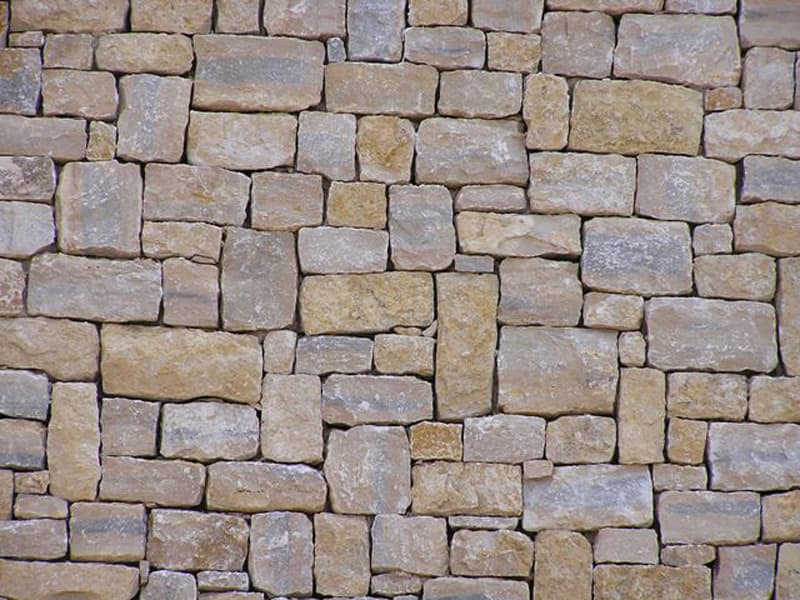

No two traditional walls are quite the same. Before recommending insulation, we assess the masonry, existing plaster, pointing, moisture exposure, ventilation, and junctions around floors, ceilings and windows. We also consider the client's objectives, available space and thermal performance requirements. Only then do we recommend a suitable BreatheTherm build-up. The building determines the insulation specification. The catalogue does not.
Why every traditional wall needs its own survey
Solid masonry looks repetitive from the street. Inside the construction it is not. Brick size, rubble cores, bonding timbers, earlier plasters and later cement repairs all change how the wall holds and releases moisture.
A specification copied from the last job will be wrong on some of those walls. That is how vapour-closed linings get signed off on buildings that cannot dry behind them, which is the failure described in walls that are allowed to dry.
A survey is also how you avoid over-insulating a wall that needed a thinner, vapour-open coat, or under-insulating a sheltered plane that could have taken PerliTherm at a useful thickness. U-values without trapping moisture is the thermal half of the same decision.
What we read in the masonry, plaster and pointing
Start with what the wall is. Brick or stone, approximate thickness, whether it is truly solid, whether there is a rubble core, whether later dry lining is already hiding a problem.
Then the coats. Lime plaster, gypsum, cement, paint films: each has a different vapour resistance. A wall that is already wearing a dense face may need that face taken off before any insulating render goes on. PerliScratch only makes sense on masonry that can receive a keyed lime-perlite coat.
Pointing is not cosmetic. Lime pointing lets a wall dry. Hard cement pointing traps moisture in soft masonry and is one of the common reasons a "dry" house is not dry. External cement render is the larger version of the same mistake.
Moisture mapping belongs here: salts, high meter readings at the base, staining on the weather elevation. Breathable insulation is not a damp treatment. If water is getting in, you find that path first.
Junctions, ventilation and exposure decide real thickness
The wall plane is the easy drawing. The job lives at the edges.
Window reveals, shutter boxes, joist ends, floor zones and ceiling lines decide whether 50 mm is possible, whether 10 mm AeroGel is required, or whether the lining has to stop and be detailed as a return. Ignore those junctions and you specify a thickness that cannot be built.
Ventilation is part of the wall's moisture budget. A well-insulated room with no extract at the kitchen or bathroom will push humidity at the new lining. The survey should say what ventilation exists, not assume the wall can absorb a lifestyle problem.
Exposure is the outdoor half. A sheltered courtyard elevation and a south-westerly gable on the same house may need different thicknesses, or different repairs, before they take the same system. Driving rain plus internal insulation is the combination WTA 6-4 exists to catch.
Floors belong in the same visit. A cold, vapour-closed floor slab can keep the base of a wall wet. Where the floor is in scope, PerliBase and the floor build-up are part of reading the wall, not a later extra.
Matching the brief to what the wall can take
Clients bring a U-value, a cold room, a listing, a budget, or a fear of losing floor area. All of those are legitimate. None of them override the masonry.
Available space is often the honest limit. Panelling, cornices and room proportions are why listed building consent and thin aerogel details exist. Thermal ambition is why PerliTherm exists in the plane. The survey's job is to hold those in one specification.
If the brief is "make it like a new house", the survey is where that gets translated into what this house can do. Will it work? is a first filter. Standing in front of the wall is the real one.
From survey notes to a BreatheTherm build-up
Once the wall is understood, the build-up is usually straightforward. PerliScratch on sound masonry. PerliTherm at the thickness the plane and the drying argument can carry. AeroGel at the junctions that cannot take that thickness. Lime finish. Mesh where the coat needs it.
That stack is in the internal wall layer guide. The survey is what chooses among those layers, and what sends a case to hygrothermal modelling instead of to a standard detail.
Architects can put the same method in a drawing pack using the for-architects notes. Homeowners and specifiers who want the wall read in person can book a free assessment. Thickness is the last number we write, not the first.
What you should have before anyone prices the lining
A price without a survey is a guess. Before tendering, you should know the masonry, the coats that will stay or come off, the weather elevations, the junctions that limit thickness, and whether consent is in play.
That is enough to choose PerliTherm, AeroGel, or both, and to say where the lining stops. It is also enough to keep a contractor from quoting a vapour-closed board because it was the familiar item on the last job. The survey is the document that makes the later drawings honest.